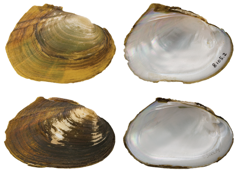

Potamilus saladoensis (Lea, 1860a)
Salado Mucket

Potamilus saladoensis – top image, female, Lower Canyons of the Rio Grande [Rio Grande drainage], length 67.0 mm; bottom image, male, Lower Canyons of the Rio Grande [ Rio Grande drainage], length 115.0 mm, TAMU-NRI 8105.2 and 8388.14.
Identification
Shell structure: moderately thin to thick, somewhat compressed to inflated.
Shell outline: elliptical to ovate, may have a low dorsal wing posterior to the umbo, which can be missing due to erosion or breakage.
Posterior ridge: broadly rounded, occasionally distinct.
Shell color: tan, brown, or black; surface dull to subglossy.
Rays: may present green markings or faint rays.
Shell texture: without sculpture.
Umbo: low, broad and elevated slightly above the hinge line; umbo cavity shallow.
Umbo sculpture: unreported.
Pseudocardinal teeth: triangular, erect, moderately thick, 2 in the left, somewhat divergent, 1 tooth in the right valve.
Lateral teeth: relatively short, moderately thick, slightly curved, 2 in left valve, 1 in right valve.
Interdentum: long and narrow.
Nacre: white to bluish-white; iridescent posteriorly.
Other: sexually dimorphic, females broadly rounded to truncate, males more pointed or narrowly rounded.
General distribution
Rio Grande drainage of Texas and Mexico.
Habitat
Medium to large rivers, where it may be found in nearshore habitats along banks and in backwater pools. Occurs in still to moderate currents in substrates composed of various combinations of mud, sand, and gravel, may also reside in rock crevices, travertine shelves, and under large boulders.
Legal listing status
USFWS: Under Review
Texas: State Threatened